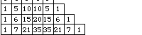
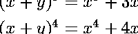
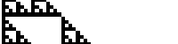
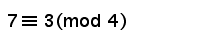
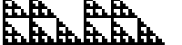
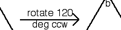
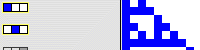

| Here is the simplest example of Pascal's triangle. |  |
| Why should we care about this arrangement of numbers? |  |
| How is this related to fractals? |  |
| We generalize the even-odd distinction using modular arithmetic. |  |
| What happens to Pascal's triangle mod 3? |  |
| To look at more general versions of Pascal's triangle, we take a brief excursion into some group theory. |  |
| Other questions we can ask about Pascal's triangle. |  |
Return to Pascal's Triangle and Its Relatives.